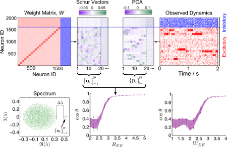
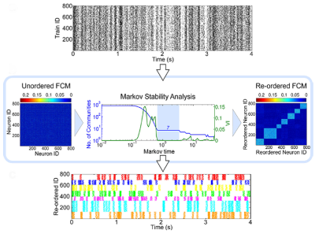

Slow Switching Assemblies in Structured networks
Understanding how the complex orchestration of neuronal firing activity is determined by the structure of the underlying network (i.e., its wiring) is an important step towards comprehending how neural computation is manifested, especially given the growing experimental access to temporal record- ings and connectomics. I a recent work [1] we investigated the link between network structure and the dynamics of neuronal assemblies in the context of leaky-integrate-and-fire (LIF) networks. We show how structural features in the wiring of the network can introduce additional time-scales to the dynamics, and how such structured wiring can lead to spatio-temporally segregated, coherent activity of groups of neurons, including both inhibitory and excitatory neurons
Matlab code for reproducing our results can be found here: https://github.com/CellAssembly/SSA-Dynamics. Feel free to send me an email with any suggestions, questions etc. regarding the code.
[1] "Emergence of Slow-Switching Assemblies in Structured Neuronal Networks", Michael T. Schaub*, Yazan N. Billeh*, Costas A. Anastassiou, Christof Koch and Mauricio Barahona, PLoS Computational Biology 11(7), 2015, pp. e1004196 (* denotes equal contribution) see also arXiv:1502.05656)
Detecting Cell Assemblies in Neural Spike trains
Give a set of recorded spike trains, how can we detect possible structured activity in the data, possibly stemming from neural cell assemblies? Using the Markov stability framework in combination with a new functional connectivity measure, we have provided a tool for solving this problem in a recent publication [1]. Our dynamics driven methodology is able to extract patterns in the spike trains a multiple scales, without any prior knowledge of their expected size.
Matlab code can be found here: https://github.com/CellAssembly/Detection.
[1] "Revealing cell assemblies at multiple levels of granularity", Yazan N. Billeh*, Michael T. Schaub*, Costas A. Anastassiou, Mauricio Barahona, and Christof Koch, Journal of Neuroscience Methods 236(0), 2014, pp. 92-106 (* denotes equal contribution; see also arXiv:1411.2103
Quantifying Edge-to-Edge relations
Most network analysis considers the nodes as the primary entities of importance. However, there are arguable a number of cases in which relations between edges are of interest, in particular if there is a flow occuring on th edges. In Ref. [1], we have presented graph-theoretical measures to quantify edge-to-edge relations. Our measures can reveal the dynamical interplay between the edges of a network, including potentially non-local interactions.

Matlab code implementing our edge-measures can be found HERE.
There is a python implementation available as well HERE, thanks to Jeff Alstott (Cambridge)!
Feel free to send me an email with any suggestions, questions etc. regarding the code.
[1] "Structure of complex networks: Quantifying edge-to-edge relations by failure-induced flow redistribution", Michael T. Schaub, Jörg Lehmann, Sophia N. Yaliraki, Mauricio Barahona, Network Science 2(1), 2014, pp. 66--89; see also arXiv:0707.0609
Markov Zooming Map Equation
In some recent work we have presented a dynamical extension to the so called "map equation" framework by Rosvall and coworkers [1]. Within this work [2] we could show that the standard map equation is prone to show a so called field of view limit [2,3], which effectively results in an overclustering of a network if the community structure is not sufficiently dense. By endowing the map equation with an explicitely time-dependent flow model one can scan across all scales in a natural manner and thus effectively evade the field of view problem [2].

A recent zip archive of the code can be found HERE. The most up-to-date code will also be available via a public code repository on github and the associated homepage.
https://github.com/michaelschaub/MarkovZoomingMap -- git repository
http://michaelschaub.github.com/MarkovZoomingMap/ -- associated homepage
Feel free to send me an email with any suggestions, questions etc. regarding the code or make use of the repository to contribute.
[1] "Maps of information flow reveal community structure in complex networks", Martin Rosvall and Carl T. Bergstrom, PNAS 105, 1118 (2008); see also arXiv:0707.0609
[2] "Encoding dynamics for multiscale community detection: Markov time sweeping for the Map equation", M.T. Schaub,
R. Lambiotte, M. Barahona, Phys. Rev. E., Aug, 2012. Vol. 86, pp. 026112. American Physical Society; see also arXiv:1109.6642
[3] "Markov dynamics as a zooming lens for multiscale community detection: non clique-like communities and the field-of-view limit", Schaub, M. T.; Delvenne, J.-C.; Yaliraki, S. N. & Barahona, M. PLoS ONE, Public Library of Science, 2012, 7, e32210
top
Stability of a graph partition
Looking for code of the stability method? You can find it here:
http://www2.imperial.ac.uk/~mpbara/Partition_Stability/
 top
top